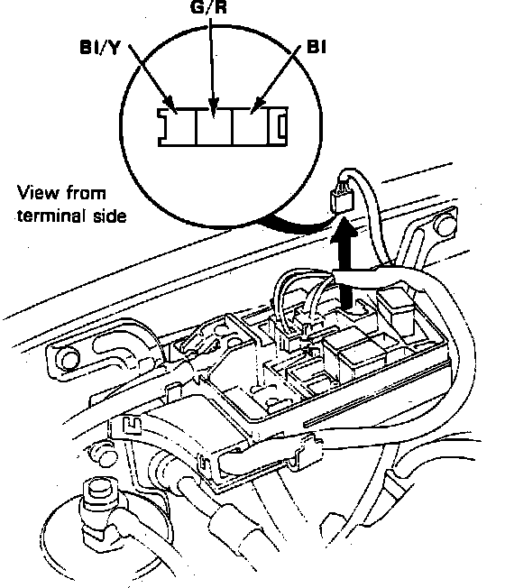

Electric Load Sensor: Testing and Inspection
Fig. 18 ELD Unit Terminal Identification:

1. Ensure battery is fully charged, open main fuse box lid, then disconnect 3-pin connector from ELD unit, Fig. 18.
2. Turn ignition switch On, then connect voltmeter positive lead to black/yellow terminal and negative lead to black terminal. Observe voltmeter and ensure battery voltage exists.
3. If no voltage exists, check for a blown No. 4 fuse in dash fuse box, an open in the black/yellow wire between dash fuse box and main fuse box, or a poor ground connection. If battery voltage exists, proceed to next step.
4. With ignition switch On, check voltage between green/red terminal and ground. Voltage should be approximately .5 volts. If voltage is not within specified limits, check alternator. If voltage is as specified, proceed to next step.
5. Reconnect 3-pin connector, then check voltage between green/red terminal and ground with ignition switch On and headlights on low beam. Voltage should be approximately .2 volts. If voltage is as specified, ELD unit is operating properly. If voltage is not within specified limits, replace main fuse box. The ELD unit is integral with the main fuse box and cannot be replaced separately.